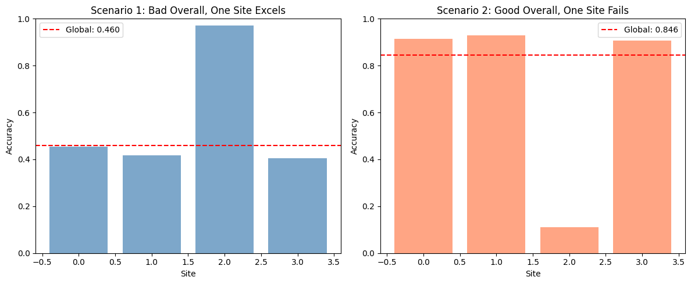

Compute metrics by site to detect biased performance.¶
uniharmony allows you to stratify the performance metrics by site, unreveling hidden patterns.¶
```python
Imports¶
import matplotlib.pyplot as plt import numpy as np from sklearn.metrics import accuracy_score
from uniharmony.metrics import report_metric_by_site
```
```python
Generate site assignments and labels¶
rng = np.random.default_rng(23) n_sites = 4 n_samples = 1200
site_probs = rng.dirichlet(np.ones(n_sites)) sites = rng.choice(np.arange(n_sites), size=n_samples, p=site_probs) y_true = rng.integers(0, 2, size=n_samples)
sites_unique = np.unique(sites) site_counts = np.bincount(sites, minlength=n_sites) smallest_site = int(np.argmin(site_counts))
def _make_predictions_with_site_accuracy(y_true, sites, site_accuracy, rng): y_pred = y_true.copy()
for site in np.unique(sites):
mask = sites == site
n_site = mask.sum()
# Flip labels to reach the desired accuracy for this site
flip = rng.random(n_site) < (1.0 - site_accuracy[site])
site_preds = y_pred[mask]
site_preds[flip] = 1 - site_preds[flip]
y_pred[mask] = site_preds
return y_pred
Scenario 1: Overall bad performance, but one site excels¶
print("Scenario 1: Overall bad performance, one site excels") strong_site = smallest_site # keep the strong site small so overall stays poor base_acc_s1 = rng.uniform(0.25, 0.40) strong_acc_s1 = rng.uniform(0.95, 0.99) site_acc_s1 = dict.fromkeys(sites_unique, base_acc_s1) site_acc_s1[strong_site] = strong_acc_s1
y_pred_s1 = _make_predictions_with_site_accuracy( y_true, sites, site_acc_s1, rng ) metric_global_s1 = accuracy_score(y_true, y_pred_s1) metric_s1 = report_metric_by_site( y_true, y_pred_s1, sites, accuracy_score, overall_performance=True ) metric_global_s1 = metric_s1.pop("overall")
print(f"Strong site: {strong_site}") print(f"Global accuracy: {metric_global_s1:.3f}") print(f"Per-site accuracy: {metric_s1}") print()
Scenario 2: Overall good performance, but one site fails badly¶
print("Scenario 2: Overall good performance, but one site fails") weak_site = smallest_site # keep the weak site small so overall stays strong base_acc_s2 = rng.uniform(0.90, 0.97) weak_acc_s2 = rng.uniform(0.05, 0.15) site_acc_s2 = dict.fromkeys(sites_unique, base_acc_s2) site_acc_s2[weak_site] = weak_acc_s2
y_pred_s2 = _make_predictions_with_site_accuracy( y_true, sites, site_acc_s2, rng ) metric_s2 = report_metric_by_site( y_true, y_pred_s2, sites, accuracy_score, overall_performance=True ) metric_global_s2 = metric_s2.pop("overall") print(f"Weak site: {weak_site}") print(f"Global accuracy: {metric_global_s2:.3f}") print(f"Per-site accuracy: {metric_s2}") print()
Visualize both scenarios¶
fig, axes = plt.subplots(1, 2, figsize=(12, 5))
Scenario 1¶
site_scores_s1 = [metric_s1[s] for s in sites_unique] axes[0].bar(sites_unique, site_scores_s1, alpha=0.7, color="steelblue") axes[0].axhline( metric_global_s1, color="red", linestyle="--", label=f"Global: {metric_global_s1:.3f}", ) axes[0].set_xlabel("Site") axes[0].set_ylabel("Accuracy") axes[0].set_title("Scenario 1: Bad Overall, One Site Excels") axes[0].legend() axes[0].set_ylim([0, 1])
Scenario 2¶
site_scores_s2 = [metric_s2[s] for s in sites_unique] axes[1].bar(sites_unique, site_scores_s2, alpha=0.7, color="coral") axes[1].axhline( metric_global_s2, color="red", linestyle="--", label=f"Global: {metric_global_s2:.3f}", ) axes[1].set_xlabel("Site") axes[1].set_ylabel("Accuracy") axes[1].set_title("Scenario 2: Good Overall, One Site Fails") axes[1].legend() axes[1].set_ylim([0, 1])
plt.tight_layout() plt.show()
```
Scenario 1: Overall bad performance, one site excels
Strong site: 2
Global accuracy: 0.460
Per-site accuracy: {0: 0.45384615384615384, 1: 0.41729323308270677, 2: 0.97, 3: 0.40482954545454547}
Scenario 2: Overall good performance, but one site fails
Weak site: 2
Global accuracy: 0.846
Per-site accuracy: {0: 0.9153846153846154, 1: 0.9285714285714286, 2: 0.11, 3: 0.90625}
